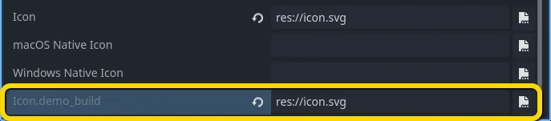
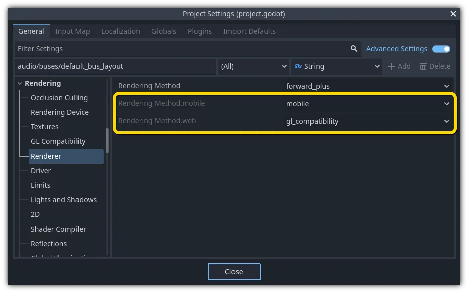

Feature tag
Giới thiệu
Godot có một hệ thống đặc biệt để gắn tag cho tính khả dụng của các tính năng. Mỗi tính năng (feature) được biểu diễn bằng một chuỗi, có thể chỉ tới nhiều thứ sau:
Tên nền tảng.
Kiến trúc nền tảng (64-bit hoặc 32-bit, x86 hoặc ARM).
Loại nền tảng (desktop, di động, Web).
Các thuật toán nén texture được hỗ trợ trên nền tảng.
Bản build là
debughayrelease(debugbao gồm cả trình chỉnh sửa).Dự án đang chạy từ trình chỉnh sửa hay từ một tệp nhị phân "độc lập".
Và nhiều thứ khác nữa.
Có thể truy vấn các tính năng lúc chạy từ API singleton bằng cách gọi:
OS.has_feature(name)
OS.HasFeature(name);
Feature tag của OS được GDExtension dùng để xác định thư viện nào cần nạp. Ví dụ, một thư viện cho linux.debug.editor.x86_64 sẽ chỉ được nạp trên bản build trình chỉnh sửa debug cho Linux x86_64.
Feature mặc định
Dưới đây là danh sách hầu hết các feature tag trong Godot. Lưu ý rằng chúng phân biệt chữ hoa chữ thường:
Feature tag |
Mô tả |
|---|---|
android |
Đang chạy trên Android (nhưng không phải trong trình duyệt Web) |
bsd |
Đang chạy trên *BSD (nhưng không phải trong trình duyệt Web) |
linux |
Đang chạy trên Linux (nhưng không phải trong trình duyệt Web) |
macos |
Đang chạy trên macOS (nhưng không phải trong trình duyệt Web) |
ios |
Đang chạy trên iOS (nhưng không phải trong trình duyệt Web) |
visionos |
Đang chạy trên visionOS (nhưng không phải trong trình duyệt Web) |
windows |
Đang chạy trên Windows |
linuxbsd |
Đang chạy trên Linux hoặc *BSD |
debug |
Đang chạy trên bản build debug (bao gồm cả trình chỉnh sửa) |
release |
Đang chạy trên bản build release |
editor |
Đang chạy trên bản build trình chỉnh sửa |
editor_hint |
Đang chạy trên bản build trình chỉnh sửa, và ở bên trong trình chỉnh sửa |
editor_runtime |
Đang chạy trên bản build trình chỉnh sửa, và đang chạy dự án |
template |
Đang chạy trên bản build không phải trình chỉnh sửa (export template) |
double |
Đang chạy trên bản build độ chính xác kép (double-precision) |
single |
Đang chạy trên bản build độ chính xác đơn (single-precision) |
64 |
Đang chạy trên bản build 64-bit (mọi kiến trúc) |
32 |
Đang chạy trên bản build 32-bit (mọi kiến trúc) |
x86_64 |
Đang chạy trên bản build x86 64-bit |
x86_32 |
Đang chạy trên bản build x86 32-bit |
x86 |
Đang chạy trên bản build x86 (mọi số bit) |
arm64 |
Đang chạy trên bản build ARM 64-bit |
arm32 |
Đang chạy trên bản build ARM 32-bit |
arm |
Đang chạy trên bản build ARM (mọi số bit) |
rv64 |
Đang chạy trên bản build RISC-V 64-bit |
riscv |
Đang chạy trên bản build RISC-V (mọi số bit) |
ppc64 |
Đang chạy trên bản build PowerPC 64-bit |
ppc32 |
Đang chạy trên bản build PowerPC 32-bit |
ppc |
Đang chạy trên bản build PowerPC (mọi số bit) |
wasm64 |
Đang chạy trên bản build WebAssembly 64-bit (hiện chưa khả dụng) |
wasm32 |
Đang chạy trên bản build WebAssembly 32-bit |
wasm |
Đang chạy trên bản build WebAssembly (mọi số bit) |
mobile |
Hệ điều hành chủ là một nền tảng di động |
pc |
Hệ điều hành chủ là một nền tảng PC (máy bàn/laptop) |
web |
Hệ điều hành chủ là một trình duyệt Web |
nothreads |
Đang chạy không có hỗ trợ đa luồng |
threads |
Đang chạy có hỗ trợ đa luồng |
web_android |
Hệ điều hành chủ là một trình duyệt Web chạy trên Android |
web_ios |
Hệ điều hành chủ là một trình duyệt Web chạy trên iOS |
web_linuxbsd |
Hệ điều hành chủ là một trình duyệt Web chạy trên Linux hoặc *BSD |
web_macos |
Hệ điều hành chủ là một trình duyệt Web chạy trên macOS |
web_windows |
Hệ điều hành chủ là một trình duyệt Web chạy trên Windows |
etc |
Hỗ trợ texture dùng nén ETC1 |
etc2 |
Hỗ trợ texture dùng nén ETC2 |
s3tc |
Hỗ trợ texture dùng nén S3TC (DXT/BC) |
movie |
Chế độ Movie Maker đang được bật |
shader_baker |
Dự án được xuất với shader baking được bật (chỉ áp dụng cho dự án đã xuất, không áp dụng khi chạy trong trình chỉnh sửa) |
dedicated_server |
Dự án được xuất dưới dạng máy chủ chuyên dụng (chỉ áp dụng cho dự án đã xuất, không áp dụng khi chạy trong trình chỉnh sửa) |
Cảnh báo
Ngoại trừ các feature tag về nén texture, web_<platform> và movie, các feature tag mặc định là bất biến. Nghĩa là chúng sẽ không thay đổi tùy theo điều kiện lúc chạy. Ví dụ, OS.has_feature("mobile") sẽ trả về false khi chạy một dự án được xuất cho Web trên thiết bị di động.
Để kiểm tra xem một dự án được xuất cho Web có đang chạy trên thiết bị di động hay không, hãy dùng OS.has_feature("web_android") or OS.has_feature("web_ios").
Feature tùy chỉnh
Có thể thêm feature tùy chỉnh vào một bản build; hãy dùng trường tương ứng trong export preset được dùng để tạo bản build đó:

Ghi chú
Feature tag tùy chỉnh chỉ được dùng khi chạy dự án đã xuất (kể cả với Triển khai một cú nhấp). Chúng không được dùng khi chạy dự án từ trình chỉnh sửa, ngay cả khi export preset được đánh dấu Runnable cho nền tảng hiện tại của bạn có định nghĩa feature tag tùy chỉnh.
Feature tag tùy chỉnh cũng không được dùng trong các script class_EditorExportPlugin. Thay vào đó, feature tag trong class_EditorExportPlugin sẽ phản ánh thiết bị mà trình chỉnh sửa đang chạy.
Ghi đè cài đặt dự án
Có thể dùng feature để ghi đè các giá trị cấu hình cụ thể trong Project Settings. Điều này cho phép bạn tùy chỉnh tốt hơn mọi cấu hình khi build.
Trong ví dụ sau, một biểu tượng khác được thêm cho bản build demo của game (được tùy chỉnh trong một export preset đặc biệt, preset này lại chỉ bao gồm các màn chơi demo).

Cấu hình mong muốn được chọn, thao tác này thực chất sẽ sao chép các thuộc tính của nó lên bảng phía trên (1). Feature tag "demo_build" được chọn (2). Cấu hình được thêm vào cài đặt dự án (3).
Sau khi ghi đè, một trường mới được thêm cho cấu hình cụ thể này.

Ghi chú
Khi dùng chức năng "override.cfg" của cài đặt dự án (không liên quan đến feature tag), hãy nhớ rằng feature tag vẫn được áp dụng. Vì vậy, hãy đảm bảo đồng thời ghi đè cài đặt với (các) feature tag mong muốn nếu bạn muốn chúng ghi đè cài đặt dự án gốc trên mọi nền tảng và cấu hình.
Ghi đè mặc định
Đã có rất nhiều cài đặt đi kèm ghi đè theo mặc định; bạn có thể tìm thấy chúng ở nhiều mục trong cài đặt dự án.

Tùy chỉnh bản build
Feature tag cũng có thể dùng để tùy chỉnh quá trình build bằng cách viết một ExportPlugin tùy chỉnh. Chúng cũng được dùng để chỉ định thư viện dùng chung nào được nạp và xuất trong GDExtension.